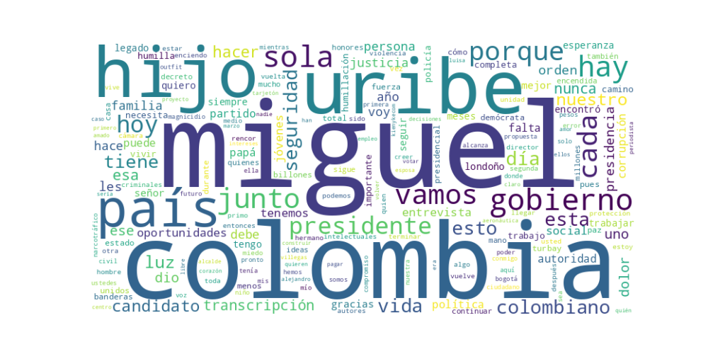

Seguidores: 134,777
Reporte de Análisis de Comunicación - Miguel Uribe Londoño
1. Perfil de Comunicación El candidato adopta un estilo de comunicación que oscila entre la formalidad política en discursos programáticos y una marcada cercanía emocional. Su lenguaje combina términos técnicos o de gestión cuando aborda propuestas específicas (descentralización, políticas económicas), con un léxico popular, directo y emotivo cuando se refiere a su experiencia personal, el legado de su hijo y el sufrimiento de las víctimas. Se presenta como una figura cercana, casi paternal ("les hablo con el corazón de padre"), que busca conectar a nivel humano, aunque mantiene la solemnidad requerida en los anuncios de política pública.
2. Temas Principales 1. Seguridad: Es el eje central de su discurso. Lo aborda con un enfoque de "mano dura", prometiendo "volver la seguridad con orden, autoridad y justicia social". Propone medidas concretas como la descentralización de la Policía ("los alcaldes y gobernadores asumirán el control") y un respaldo total a la fuerza pública. 2. Legado de su hijo Miguel / Víctimas: Un tema transversal y emocional. Usa el asesinato de su hijo como símbolo de la violencia nacional y como motivación personal. Promete "continuar su legado" y representar a todas las víctimas, mezclando el dolor familiar con una propuesta política ("difundir sus propuestas, sus ideales y su programa de gobierno"). 3. Economía y Empleo: Enfatiza la necesidad de "generar riqueza para distribuirla", criticando la informalidad y el desempleo como "humillaciones". Propone facilitar la creación de empresas, seguridad jurídica y un aumento del salario mínimo. Vincula la recuperación económica con el sector minero-energético. 4. Corrupción: La identifica como una causa fundamental de los problemas nacionales, que "roba dinero y humilla". Promete combatirla "con fuerza" y recuperar instituciones como Ecopetrol, señalando casos específicos como "Papá Pitufo". 5. Unidad Nacional: Repite constantemente la idea de "una sola Colombia", rechazando la polarización ("no es de izquierda o derecha") y llamando a la reconciliación y unidad para superar la violencia.
3. Tono y Sentimiento Dominante El tono general es crítico y confrontacional frente al gobierno actual y los actores violentos, pero esperanzador y propositivo respecto a su propio proyecto. Domina un sentimiento de dolor transformado en propósito, donde la tragedia personal se convierte en combustible para la acción política. Hay una fuerte carga emocional de indignación contra la "humillación" que sufren los ciudadanos y de determinación para cambiar la realidad.
4. Palabras Clave de Poder * "Una sola Colombia": Su frase central, símbolo de unidad y propósito nacional. * "Orden, Autoridad y Justicia Social": Trilogía repetida como solución a todos los problemas, especialmente seguridad. * "Humillación": Palabra utilizada estratégicamente para describir múltiples problemas (desempleo, costo de vida, corrupción, sistema de salud), buscando generar indignación y empatía. * "Legado" / "La luz sigue encendida": Refieren al hijo asesinado, conectando la narrativa personal con la continuidad política. * "Seguridad": La palabra más recurrente, presentada como la condición sine qua non para cualquier progreso. * "Vamos juntos": Invocación constante para generar sentido de comunidad y apoyo colectivo.
5. Conclusión Estratégica La estrategia de comunicación de Miguel Uribe Londoño es dual y altamente emocional. Por un lado, busca posicionarse como un gerente técnico con experiencia y propuestas concretas (descentralización, economía). Por otro, y este es su núcleo central, se construye como el candidato de las víctimas y del dolor, utilizando su tragedia familiar como el epicentro de su campaña y como un símbolo universal del sufrimiento colombiano. Su discurso parece dirigirse principalmente a un público desencantado con la seguridad y la economía, que valora el orden y la autoridad, y que puede conectar emocionalmente con un mensaje de resiliencia y propósito nacido del dolor. Busca evocar indignación con el presente, esperanza en un futuro ordenado, y un sentido de unidad nacional canalizado a través de su figura y del legado de su hijo.
Análisis Estratégico del Corpus de Éxito: Comunicación de Miguel Uribe
1. Resumen del Patrón de Éxito: El éxito comunicacional del candidato se fundamenta en una poderosa fusión entre identidad personal y propuesta política, donde la figura de su hijo Miguel funge como núcleo emocional y simbólico de toda su narrativa. No se trata de campaña, sino de un "legado vivo", transformando una tragedia familiar en la piedra angular de una cruzada nacional por la seguridad, el orden y la unidad. La comunicación apela directamente a la empatía y el dolor colectivo, posicionando al candidato no como un político tradicional, sino como un padre en duelo y un representante natural de todas las víctimas.
2. Tácticas de Comunicación Clave: * Relato Biográfico como Estrategia: Su historia personal (la pérdida de su hijo y su esposa) no es una anécdota; es la plataforma política. Se presenta como el "continuador" de un legado interrumpido, lo que confiere a su candidatura un aura de destino y misión superior a la política convencional. * Apelación Dual: Duelo y Firmeza: Maneja una dicotomía emocional efectiva. Por un lado, apela a la empatía y el dolor compartido (de víctimas, periodistas, familiares). Por otro, pivota hacia una promesa de fortaleza inquebrantable, orden y autoridad, presentándose como la persona "endurecida" por el sufrimiento y, por tanto, capacitada para restaurar la seguridad. * Simbolismo y Metáfora Poderosa: El uso de la "luz" como metáfora central es recurrente y potente. Representa la memoria de su hijo, la esperanza, la verdad y el camino a seguir. Es un símbolo simple, emotivo y visualmente adaptable a redes sociales. * Definición Clara del "Otro": Define su oposición no como rivales políticos, sino como "los violentos", "los criminales" y "la indiferencia de los gobiernos". Esto simplifica el discurso, crea un enemigo claro y le permite presentarse como la única opción de contraste.
3. Temas de Mayor Resonancia: 1. Seguridad y Orden: El tema central y recurrente, siempre enlazado a la historia de su hijo. 2. Memoria y Víctimas del Conflicto: Se posiciona como el vocero y representante natural de este colectivo. 3. Fe, Resiliencia y Propósito: Su narrativa de superación personal y fe inquebrantable tras la tragedia. 4. Apoyo a la Fuerza Pública: Mensaje directo de respaldo total a policías y soldados, ligado a la promesa de seguridad. 5. Libertad de Prensa: Lo vincula al legado periodístico de su esposa (Diana Turbay) y su hijo, dando profundidad histórica a su compromiso.
4. Perfil de la Audiencia Implícita: El lenguaje apunta a una audiencia emocionalmente movilizada, que valora la fortaleza de carácter y la narrativa de superación. Habla principalmente a: * Votantes que priorizan la seguridad de manera visceral. * Personas religiosas o que valoran la fe como pilar ante la adversidad. * Familias y comunidades afectadas por la violencia, encontrando en él un espejo y un portavoz. * Segmentos desencantados con la política tradicional, a quienes ofrece una candidatura basada en "propósito" y "legado" más que en ideología convencional.
5. Conclusión Estratégica: La clave fundamental de su poder discursivo reside en la autenticidad trágica. Ha logrado una alquimia política donde su dolor privado se convierte en su principal credencial pública. Esto lo hace inmune a los ataques políticos convencionales y le confiere una autoridad moral percibida como intachable. Su discurso no promete únicamente políticas; promete "restaurar un legado interrumpido" y "vengar/ honrar una pérdida colectiva", elevando la contienda electoral a un plano épico y personal que trasciende lo programático. Lo que lo diferencia no es un manifiesto, sino una misión.

Caption: Miguel cuanta falta me haces… Te recuerdo con orgullo, con gusto, con emoción, tu luz será eterna.
Likes: 5,752 | Comentarios: 325 | Reproducciones: 48,310
Ver en InstagramCaption: Hoy se conmemora un día que no debería existir. Día Nacional de la Memoria y Solidaridad con las Víctimas del Conflicto Armado. Somos millones de personas las que hemos padecido el dolor y el sufrimiento a causa de la violencia y la indiferencia del gobierno. Miguel, mi hijo, es un símbolo de todos aquellos que son ignorados. Y por eso, yo los voy a representar. Cuenten conmigo. #MiguelPresidente #PorUnaSolaColombia
Likes: 467 | Comentarios: 35 | Reproducciones: 3,958
Ver en InstagramCaption: Felicito a cada periodista por su buen trabajo en las regiones y en las ciudades de Colombia. Diana Turbay, la madre de Miguel, periodista, prefirió morir defendiendo los intereses del país, antes que los suyos. Y mi hijo Miguel, cuya voz apagaron los violentos siempre creyó en la importancia de una prensa libre. Gracias por su compromiso con la verdad. Brindaré protección total para su trabajo. ¡Vamos juntos por Colombia!
Likes: 1,341 | Comentarios: 63 | Reproducciones: 12,110
Ver en Instagram